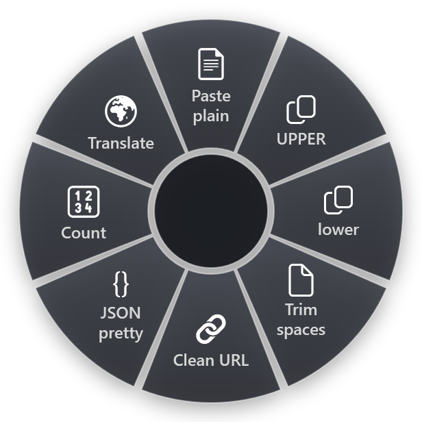

Windows has kept a clipboard history since Windows 10. Press Win+V and you see the last things you copied, not just the latest one. It is one of the most useful features most people never switch on. It also has limits that surprise people the first time they hit them.
Turning it on
Clipboard history is off by default. The first time you press Win+V, Windows offers to turn it on. You can also switch it on in Settings › System › Clipboard › Clipboard history.
Once it is on, Win+V opens a small panel near the cursor. Click an entry, or move to it with the arrow keys and press Enter, and it is pasted where you were typing.
The limits
From Microsoft's own documentation:
- 25 entries. Clipboard history keeps the last 25 things you copied. The 26th pushes the oldest one out.
- 4 MB per item. Anything larger is not kept in the history.
- Text, HTML and bitmap images. Other formats, such as files copied in Explorer, are not kept.
- Cleared on restart. Restarting the PC empties the history, except for items you have pinned.
There is no setting to raise the 25-entry limit. If you search for "increase clipboard history limit", you will find registry edits and third-party clipboard managers. The registry tips are not documented by Microsoft, so we would not rely on them.
Pinning: the part people miss
Next to each entry in the Win+V panel is a … menu with Pin. A pinned entry:
- stays when you restart,
- stays when you choose Clear all.
Pin the text you paste over and over: your email address, a standard reply, a project code, an address. It turns clipboard history into a small snippet library.
To remove one entry, use … › Delete. To clear everything except pinned items, use Clear all at the top of the panel or the Clear button in Settings.
Sync across devices
In Settings › System › Clipboard you can also sync the clipboard across your devices signed in with the same Microsoft account. Think about what you copy before switching it on on a work PC: passwords and customer data copied on one device will appear on the others.
Paste as plain text
A common annoyance with clipboard history is formatting. You copy from a web page and paste into an email, and the fonts and colours come along. In the Win+V panel, the … menu has Paste as text. Many programs also have their own shortcut for it: Ctrl+Shift+V pastes plain text in most web browsers and a number of other programs, though not in all of them.
When Win+V shows nothing
If Win+V opens an empty panel or nothing at all:
- It is switched off. Turn it on in Settings › System › Clipboard. Items copied before that are not in the history.
- You restarted. Only pinned items survive a restart.
- Your organisation turned it off. On managed work PCs, an administrator can disable clipboard history with a policy. The switch in Settings is then greyed out.
- The item was too large or not text or an image. Anything over 4 MB, and formats other than text, HTML and bitmaps, are not kept.
When 25 is not the problem
Usually the limit is not what slows people down. It is the steps: Win+V, scroll, find the entry, click. For the handful of things you paste dozens of times a day, there are faster routes.
RadialDeck, the radial menu for Windows that we make, has two ideas here.
A ring of your last copies (Pro)
Add a Clipboard history ring slice to your ring. Flick at it and a second ring opens with the last things you copied as slices; flick at one and it is pasted, exactly as it was. Each slice is labelled with the start of the copied text, so you pick by direction rather than by scrolling a list.
It is private by design. The entries live only in memory: they are never written to disk or to the configuration file, and they are gone when RadialDeck closes. RadialDeck only reads the clipboard at all once one of your rings actually uses this slice.
Fix the text instead of storing more of it
Often you do not need an older copy. You need the current one changed. RadialDeck has 32 text transforms that work on what you copied or selected:
- Paste plain removes all formatting.
- UPPER, lower and Title Case change the case.
- Clean URL strips tracking parameters from a link.
- JSON pretty formats JSON so you can read it.
- Trim spaces, Sort lines, Remove duplicates and Count for lists and quick checks.

Snippets as slices
For text you paste all the time, a Paste slice holds the text itself: your signature, a standard answer, an IBAN, a support macro. It does not depend on the clipboard at all, so it survives restarts and never gets pushed out.
A sensible setup
- Turn on Win+V and pin the five things you paste most.
- Use Paste as text (or Ctrl+Shift+V where the program supports it) when formatting gets in the way.
- Put repeated snippets in a ring if you paste them many times a day.
- Keep sync off on work machines unless you need it.
The text transforms and paste slices are in RadialDeck's free version (two rings). The clipboard history ring is part of Pro, 24 € a year with VAT included, with a 14-day trial. Get it from the Microsoft Store.
Try it in RadialDeck
Free for two rings, with a 14-day trial of everything in Pro. Windows 10 and 11, from the Microsoft Store.